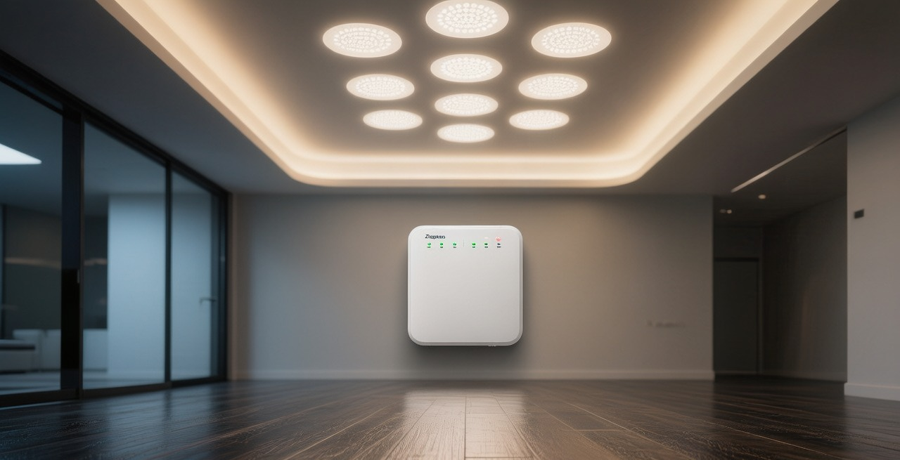
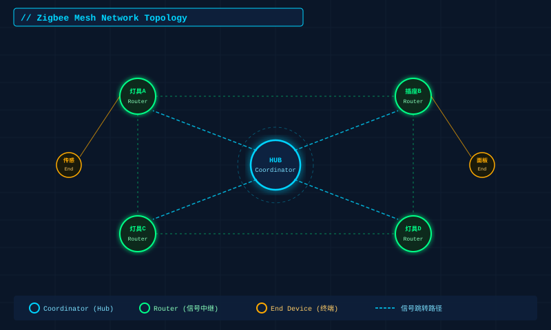
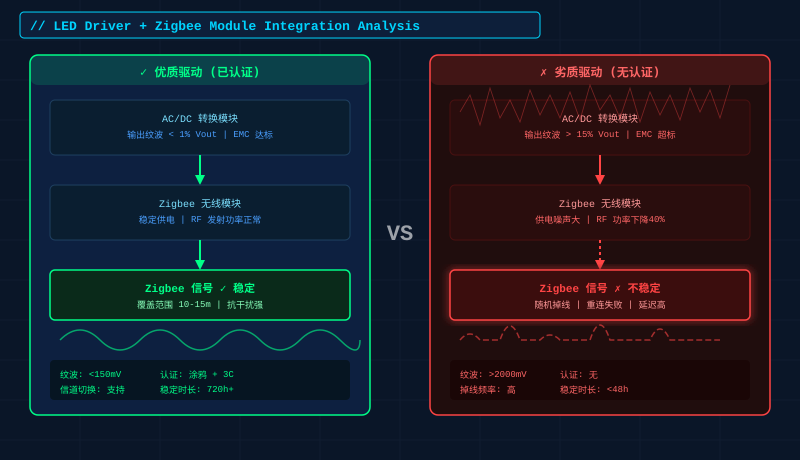
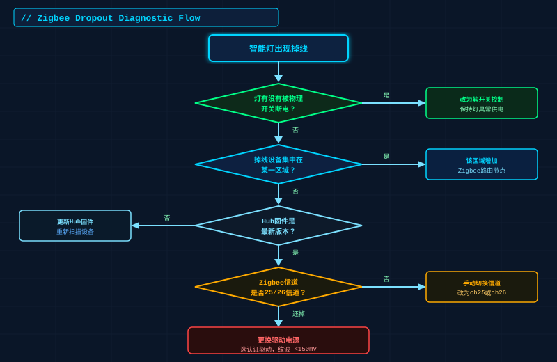

买了全套智能灯，结果每隔几天就有几盏"失联"——这大概是智能家居最让人崩溃的体验之一。
小红书上随便搜"Zigbee掉线"，几百条吐槽扑面而来："客厅三盏灯，每次早上起来必有一盏不响应"、"场景联动彻底废了，灯光有时候自己开自己关"、"退款了，还是传统开关省心"。
其实掉线这件事有规律可循，绝大多数情况都能排查清楚。本文从Zigbee的工作原理出发，系统梳理5个最常见原因，逐一给出解决方案。
先搞清楚：Zigbee网络是怎么工作的
Zigbee依靠网状拓扑（Mesh） 传输信号。网络中的设备分三种角色：
| 角色 | 描述 | 典型设备 |
|---|---|---|
| 协调器（Coordinator） | 网络的核心，负责建立和管理整个网络 | 智能家居网关/Hub |
| 路由器（Router） | 常供电设备，可以中继信号，帮其他设备"跳一跳" | 插座、灯具（常亮状态） |
| 终端节点（End Device） | 只发送/接收信号，不中继 | 电池门窗传感器 |
这是理解几乎所有Zigbee掉线问题的基础。
原因一：网状网络中有节点断开，导致"连锁掉线"
最常见的情形：你的灯具从常亮状态关闭了（物理断电），或者是开关控制了灯具的火线——这个灯立即从Router变成"消失"，所有信号路由经过它的设备跟着失联。

怎么判断：同时掉线的几盏灯，在空间上是否挨得很近？或者有没有某个"关掉就大量掉线"的特定灯？
解决方案：
原因二：驱动电源兼容性差，信号从源头就不稳
这个原因被忽视得最多，也最难自查。
Zigbee模块集成在LED驱动电源内部，如果驱动的EMC（电磁兼容）设计不达标，或者供电纹波过大，会直接影响Zigbee无线模块的发射功率和接收灵敏度。表现为：该灯偶发性掉线，换一盏位置完全一样的灯反而没问题。

判断方法：
- 掉线的几乎总是同一批或同型号的灯
- 将同批灯换个位置，原来稳定的位置也开始掉线
- 优先选择通过涂鸦认证或Zigbee Alliance认证的驱动模块，认证产品在RF性能上有基础保障
- 查看驱动规格书中的纹波噪声指标，合格产品 ≤1% Vout
- 购买时不要只看价格，认准带3C认证+Zigbee认证双证的驱动
原因三：2.4GHz信道被WiFi严重干扰
Zigbee工作在2.4GHz频段，跟WiFi 2.4G、蓝牙在同一频段竞争。
Zigbee有16个信道（11-26），其中15、20、25、26信道与WiFi信道干扰最小。国内WiFi路由器默认常用1、6、11信道，如果你的Zigbee Hub自动选到了干扰严重的信道，整个网络都会不稳定。
如何检查当前信道：大多数智能家居App（涂鸦、米家等）的Hub设置页面可以看到当前Zigbee信道。
优化步骤：
原因四：Hub到设备距离过远，超出单跳范围
Zigbee单跳有效距离室内约10-15米，穿墙衰减严重（混凝土墙每堵衰减约10dB）。如果家里超过80平，或者有多个隔断房间，单靠Hub覆盖完全不够。
典型场景：卧室的灯稳定，但卫生间/阳台/地下室的灯经常失联——大概率是信号到不了。
解决方案：
- 在远端区域增加Zigbee路由器节点（任何常供电的Zigbee插座都可以充当Router）
- 节点布置原则：相邻节点间距不超过10米，穿墙时适当加密
- 高层大平层建议每个房间至少1个Router节点
原因五：Hub固件/App版本滞后，兼容性问题
这是容易被忽视但其实很常见的原因，特别是混用不同品牌Zigbee设备时。
Zigbee协议有子集差异，不同版本固件处理设备加网/重连的逻辑不同。有时候只是Hub固件更新后，旧的设备配对信息被清除，就表现为"设备消失"。
检查步骤：
系统性排查流程

当遇到掉线问题时，建议按以下顺序排查：
1. 确认灯具有没有被物理断电（最常见）
↓ 是 → 改用软开关，保持常供电
↓ 否
检查掉线设备的位置分布，是否集中在某个区域
↓ 是 → 增加路由节点
↓ 否
检查Hub固件版本，更新并重新扫描设备
↓ 还掉线
检查Zigbee信道，尝试换至25/26信道
↓ 还掉线
换同型号不同批次灯测试，判断是否驱动兼容问题 选购阶段就避坑：几个实用建议
结语
智能灯掉线这件事，80%都是可以排查解决的，不是产品垃圾，也不是协议有根本缺陷——Zigbee Mesh在商业项目里支撑几百个节点稳定运行是常态。
问题根源往往就几个：物理断电破坏了网络拓扑、信道干扰、距离过远、驱动兼容性差。逐一排查，通常第一两步就能解决90%的问题。
如果你家的灯一直掉线，不妨先从"保证灯具常供电"这一步开始——可能就这一个改变，整个网络就稳了。
作者：Nexlamp技术团队 | 专注智能照明驱动电源研发 咨询选型：13825496855 | www.nexlamp.com